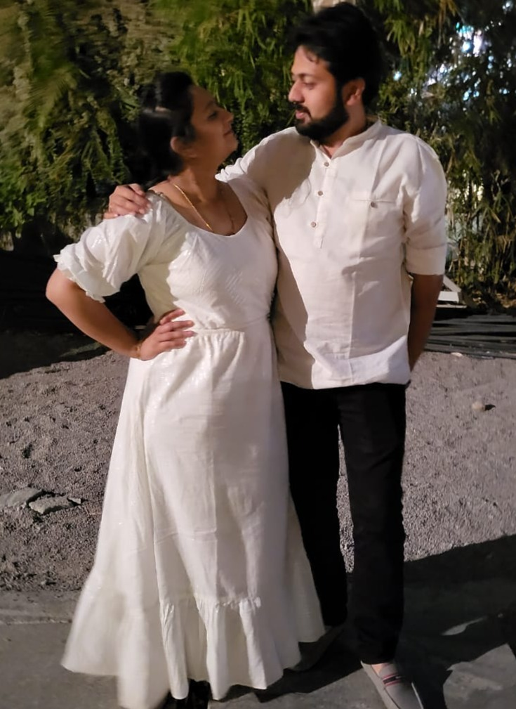

When Two Paths Finally Crossed
Parallel Lives at MIT Manipal
Life sometimes writes the most unexpected stories. Two students once walked the same corridors of MIT Manipal, studying for their MS in Engineering. They shared the same campus, the same classrooms, and even the same city — yet, they never once crossed paths there.
Destiny in Bangalore
Years later, after graduation, both had settled down in Bangalore. That’s when destiny intervened, not through coincidence, but through family. Their families were exploring arranged marriage matches and soon realized that their profiles fit together perfectly, almost like a jigsaw puzzle.
The Extrovert
He was the extrovert: friendly, quick to make connections, and someone who never fussed over small details. With an unmatched mind for floor plans, there was nobody better at designing functional and practical layouts. His fashion sense was okay — but his real charm was in how he could get things done with ease.
The Introvert
She, on the other hand, was an introvert. Quiet, thoughtful, and known for having just one best friend throughout her life. She had a great sense of fashion and was admired for her impeccable attention to detail. If something needed perfection, she was the one who would spot what others missed.
Complementary Strengths
At first glance, they seemed very different. But when they came together, those differences became their biggest strengths. He drew bold ideas and big plans, while she refined them with precision. Together, they became a team where one’s vision was balanced by the other’s eye for detail.
Marriage and a New Beginning
Marriage was just the beginning. With their engineering backgrounds and complementary personalities, they took a bigger leap — they started their very own construction company. What began as two families bringing them together, grew into a partnership that builds not just homes and buildings, but a shared dream and legacy.
Leave a comment